| 70年の70冊 電子書籍で「戦後」を読む【文春e-Books】 | |
| 文藝春秋電子書籍編集部・編 | |
＊この電子書籍は横書きでレイアウトされています。
＊読む際のご注意、お断り等についてはこちら をお読み下さい。
はじめに
2015年8月15日は、太平洋戦争終結よりちょうど70年にあたります。
日本が大きな転換点に立たされている今、私たちが生きてきた「戦後」という時代を顧みる機運が、かつてなく高まっています。
時代の空気は、リアルタイムで経験した人にしか吸えませんが、後世の人々も、本を通してその匂いを感じ取ることができます。とりわけ時代状況を丁寧に取材したノンフィクションや小説は、読者の眼前に、立ち会えなかった光景をビビッドに映し出してくれます。
ここに紹介する70作の電子書籍は、1945年の終戦から2014年のSTAP細胞事件まで、70年それぞれの年を象徴する70のトピックをテーマにしています。厳選に厳選を重ねた67のノンフィクションと3つの小説。これらがあなたに、「戦後」を旅するかつてない知的興奮と刺激に満ちた読書体験をもたらすことをお約束します。
2015年7月 文藝春秋 電子書籍編集部
この電子書籍について
●この電子書籍で紹介する70作品は、すべて文藝春秋より電子書籍版が発売中です。
●複数巻で構成される作品の場合、上巻の画像のみを掲載しています。
●「電子書店の頁へ」のアイコンをクリックすると、電子書店の商品紹介頁に飛びます。
文中一部敬称略
【目 次】
電子書籍で「戦後」を読む
70年の70冊
1945（昭和20）年
太平洋戦争終結
日本のいちばん長い日 決定版
半藤一利
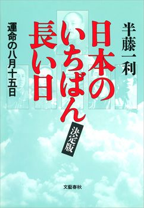
単行本刊行 1995年
8月15日。NHKラジオが正午の時報を打った。和田信賢放送員の緊張した声。「ただいまより重大なる放送があります。全国の聴取者のみなさまご起立願います」。君が代に続いて流れてきたのは、一般国民が初めて耳にする、天皇の肉声だった。
「朕深ク世界ノ大勢ト帝國ノ現状トニ鑑ミ非常ノ措置ヲ以テ時局ヲ收拾セムト欲シ茲ニ忠良ナル爾臣民ニ告ク──」に始まる「終戦の詔書」朗読は、約5分間続いた。国民は日本のポツダム宣言受諾、すなわち敗戦を知った。
8月6日、広島に原爆投下。9日、ソ連が対日参戦。同日、長崎に原爆投下。もはや日本の命運は尽きていた。しかるに日本政府は徹底抗戦を叫ぶ陸軍に引きずられ、ポツダム宣言に対する態度を決められない。そして14日正午、宮城内地下防空壕にて開かれた御前会議。ここから玉音放送までの24時間が、日本のその後70年を決した。
本作は、この日本史上最も長い一日を、綿密な取材と証言をもとに再現したノンフィクションである。あの日、日本では何が起き、何が起きなかったのか──。
1946（昭和21）年
「リンゴの唄」ヒット
血脈（上中下）
佐藤愛子
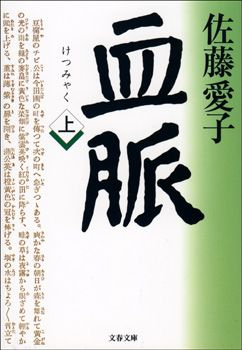
単行本刊行 2001年
1月にリリースされた「リンゴの唄」。並木路子の明るい歌声は、ラジオを通して、敗戦に疲れ切った日本人の耳に染み入った。戦後最初のヒット曲とされるが、終戦を肌で知る世代は無論、団塊世代も団塊ジュニアも歌える希有な流行歌だ。
この歌を作詞したのがサトウハチロー。「ちいさい秋みつけた」「うれしいひなまつり」など誰もが知る童謡、「長崎の鐘」「悲しくてやりきれない」など数々の歌謡曲を残した。
ハチローの父は明治から昭和にかけ活躍した作家、佐藤紅緑。紅緑はある新進女優に入れ揚げ、長男のハチローらを捨て同棲する。その女優の産んだ子が後の作家、佐藤愛子さんである。
佐藤さんが、血の因縁ともいうべき情念にひきずられる自らの一族を描いたのが本作「血脈」。昭和9年、四男久が19歳で心中。末息子の死に悲嘆にくれる紅緑を冷やかに見つめるハチローの眼差し。やがて、戦争の気配と共に佐藤家にも世代交代の季節が訪れる。戦後、「リンゴの唄」を始めヒット曲を次々に飛ばすハチローと、老いてゆく紅緑。妻妾同居までする息子の放埒を耳にし、父はかつて恋に狂った自分の来し方を振り返らずにはいられない。
佐藤家の人々が織りなす凄絶な生のドラマはまた、大正、昭和、平成と日本人が辿ってきた道でもある。12年の歳月をかけた大河小説にして、著者のライフワーク。第48回菊池寛賞受賞。
1947（昭和22）年
日本国憲法施行
日本国憲法の二〇〇日
半藤一利
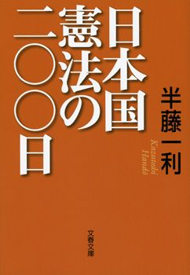
単行本刊行 2003年
1946年11月3日、日本国憲法公布。半年後の47年5月3日施行。
新憲法制定の山場は、敗戦から、政府が46年3月6日に「憲法改正草案要綱」を発表するまでのわずか半年余りにあった。各政党や民間有識者による改正草案の発表。そしてGHQによる原案提示。そこに帝国憲法改正小委員会委員長・芦田均のいわゆる"芦田修正"が入り、要綱が固まる。まさに戦後日本のかたちを決定づけた、激動の203日間だった。
45年3月10日の東京大空襲で九死に一生を得た半藤氏は、疎開先の茨城県下妻を経て、新潟県長岡で敗戦を迎える。いま「歴史探偵」として知られる氏は15歳の少年だった。あの、苛酷ではあるが希望に満ちた203日間を、歴史探偵の目に少年の目を織り交ぜつつ、哀切に描ききる。
「制定過程が拙速であり、与えられたものであることに相違はこれっぱかりもない。といって、『押しつけだから』論で内容まで全否定してしまうのは、（永井）荷風さんではないが、『笑う可し』というほかはない」（本書より）
1948（昭和23）年
東京裁判終了
東條英機と天皇の時代（上下）
保阪正康
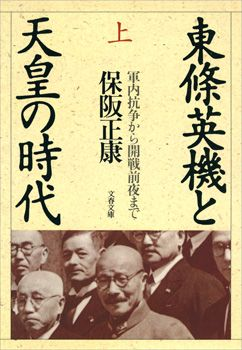
単行本刊行 1979-80年
1946年5月3日、東京・市ヶ谷の旧陸軍士官学校講堂にて開廷した極東国際軍事裁判（東京裁判）。被告席に座ったのは東條英機、広田弘毅、板垣征四郎、武藤章ら28人。以降、48年11月12日までの2年半にわたり、「平和に対する罪」などをめぐるかつてない論戦が展開された。東條ら7人に死刑判決。12月23日執行。
開戦時の首相であり、戦犯の代表格として語られがちな東條英機。彼はいかなる人物だったのか？ 長州閥に陸軍を追われた父の無念を胸に、軍内抗争をかいくぐり、陸軍大将、陸軍大臣、そして首相にまで上り詰めた男。しかし日米開戦を数日後に控えた某夜、彼は官邸別館でひとり号泣した。その涙は何であったのか？
東條への嫌悪感を心に抱きながらも、「自らの生理感覚を解明することが戦後民主主義の脆弱さの克服への道だ」という視点から、保阪氏が新資料と関係者への徹底取材をもとに、昭和史最大の「悪役」として葬り去られた男の64年の軌跡を克明に検証する。
1949（昭和24）年
下山事件
日本の黒い霧（上下）
松本清張
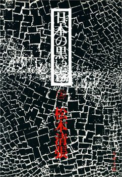
単行本刊行 1960年
戦後史屈指のミステリー、下山事件。6月1日、初代国鉄総裁に就任した下山定則は、早速GHQからの大量の人員整理要求という難題に直面した。日増しに苦悩の色を深める下山。そのさなかの7月5日朝、下山は失踪した。同日捜査が開始されたが、日付が変わって程なく、常磐線北千住─綾瀬間で轢死体で発見された。
事件の背景についてさまざまな憶測が飛ぶ。下山の死は自殺か他殺か。すなわち生体轢断か死後轢断か。司法解剖の結果をめぐって東大と慶大で見解が分かれた。しかし、最終的な結論を見出さないまま、捜査は打ち切られた。1964年公訴時効成立。
57年の「点と線」以来、「社会派推理小説」という新境地を切り開いていた松本清張は、60年、「文藝春秋」誌上で「日本の黒い霧」を連載。帝銀事件、松川事件、造船疑獄など戦後の大事件に推理作家ならではの視点で次々にメスを入れた。わけても「下山国鉄総裁謀殺論」（上巻収録）では、下山の死は占領軍の関与した"謀殺"であったとする大胆な推理を展開。センセーションを巻き起こした。
1950（昭和25）年
「羅生門」公開
複眼の映像──私と黒澤明
橋本忍
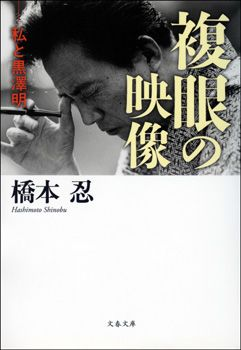
単行本刊行 2006年
黒澤明監督を一躍"世界のクロサワ"に押し上げた作品、それが「羅生門」だ。公開の翌1951年、ヴェネツィア国際映画祭に出品され、最高賞の金獅子賞を受賞。まだ敗戦の傷跡深かった日本はその快挙に沸き立った。
「羅生門」の脚本を黒澤監督と共同で担ったのが、これが脚本家デビュー作だった橋本忍氏である。その後「生きる」「七人の侍」「生きものの記録」「蜘蛛巣城」などを黒澤監督とともに生み出し、また「真昼の暗黒」（今井正監督）「ゼロの焦点」（野村芳太郎監督）「白い巨塔」（山本薩夫監督）「日本のいちばん長い日」（岡本喜八監督）「日本沈没」（森谷司郎監督）をはじめ数々の名作の脚本を手がけ、日本を代表する脚本家となった。2015年現在97歳。まさに戦後邦画史の生き証人といえよう。
黒澤監督の絶頂期をともにした氏が、その凄まじい、息の詰まるような創作体験のすべてを本書で赤裸々に明かしている。全映画ファン必読。
1951（昭和26）年
マッカーサー元帥離日
指揮官
児島襄
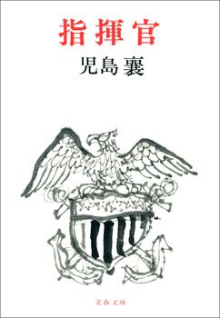
単行本刊行 1971年
1945年8月30日の来日以来、連合国軍最高司令官として日本占領を指揮したダグラス・マッカーサー米国陸軍元帥。
軍人として栄達を極め、大統領への野心を秘めつつ日本統治を進行していたマッカーサー。しかし50年に勃発した朝鮮戦争が彼の運命を変えた。当初こそ仁川上陸作戦の成功など華々しい戦果を挙げたものの、中国への進攻をめぐって本国のトルーマン大統領と対立。ついには更迭される。4月16日、日本を離れアメリカに帰還。連邦議会で退任演説をおこない、「老兵は死なず、ただ消え去るのみ」という言葉を残した。
児島襄は本書でマッカーサーをはじめ、山本五十六、山下奉文、栗林忠道、栗田健男、ハルゼー、ニミッツ、ロンメル、アイゼンハワーなど、第二次大戦を闘った東西の指揮官27人を取り上げ、彼らの重大局面における決断を鋭く論じている。
「（マッカーサーの）あまりにも多すぎる"栄光"と長すぎる頂上の地位とは、個人と機構との命運を混同視する過信を生む」（本書より）
1952（昭和27）年
血のメーデー事件
完本 皇居前広場
原武史
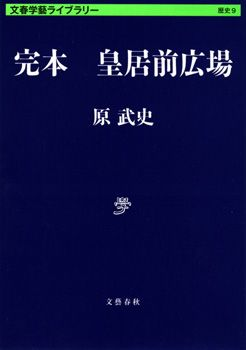
文春学藝ライブラリー刊行 2014年
日本が独立を回復してから初めてのメーデー。40万人が「再軍備反対」「単独講和反対」などのプラカードを掲げ、神宮外苑に集まった。そのうち6,000人ほどのデモ隊が皇居前広場に向かって行進。警官隊5,000人と衝突し、死者2人を出す惨事となった。
明治学院大学教授（日本政治思想史）の原氏は、皇居前広場を"定点観測"することで日本近現代の思想を探っている。46万5,000平方メートル。世界最大級の広場でありながら滅多に使われないこの場所は、しばしば歴史的事件の舞台となってきた。罹災民であふれ返った関東大震災。白馬に乗った天皇が二重橋に登場し、国民が嗚咽したシンガポール陥落。血のメーデー。平成に入ってはYOSHIKIが奉祝曲を奏で、EXILEが踊った──。
このドラマチックな歴史空間を、史料を駆使し徹底的に論ずる。
1953（昭和28）年
バカヤロー解散
誰も「戦後」を覚えていない 昭和20年代後半篇
鴨下信一
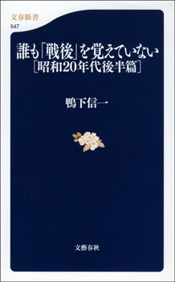
文春新書刊行 2006年
2月28日、衆議院予算委員会で吉田茂首相が西村栄一議員に対して発した「バカヤロー」という言葉。これが内閣不信任決議案の提出に繋がり、与党内の造反も手伝って可決。吉田首相は解散総選挙に打って出た。「バカヤロー解散」である。
鴨下氏は本書の冒頭で、戦後史において昭和25～29年の5年間はどうも影が薄い、とした上でこう記している。
「個々の現象をひろいあげてみると、こんな面白い時代はない。方向はでたらめで混乱し、人々は時にヒステリックなまでに熱狂し、時にうつ状態で虚脱しているけれども妙にエネルギッシュだ」
たしかに首相がバカヤローと毒づいたら解散なんて、こんな「でたらめで混乱」した話はない。あるいは朝鮮戦争、性の開放、歌舞伎・寄席・相撲の復活、ハードボイルド小説の上陸、凶悪犯罪......まさに昭和20年代後半は、面白くも不可解な激動期だった。
戦後の重要期でありながらなぜか軽視されてきたこの時代の底流を、硬軟とりまぜてユニークな視点から浮き彫りにする。
1954（昭和29）年
洞爺丸事故
洞爺丸はなぜ沈んだか
上前淳一郎
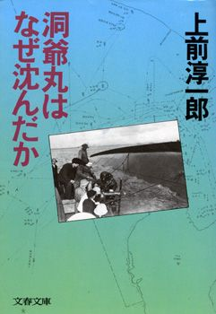
単行本刊行 1980年
9月26日、日本海側を北上してきた台風15号により、津軽海峡は荒れに荒れた。4時間足らずの間に青函連絡船5隻が相次いで転覆。とりわけ函館港を出港直後、制御不能に陥った洞爺丸は、浜への座礁をめざすも果たせず、大波に煽られ横転。乗員乗客合わせて1,155人の死者・行方不明者を出した。生存者はわずか116人。タイタニック号遭難にも迫る、日本史上最悪の海難事故となった。
台風接近の荒天下、船長はなぜ船を出したのか？ 大宅賞作家・上前氏が25年以上にわたる取材をもとに、船長、乗組員、乗客たちが繰り広げたさまざまな人間ドラマを鮮烈に描きつつ、当時の状況を克明に再現して事故の真因に迫った傑作ノンフィクション。
「洞爺丸事件がきっかけで建設が促進された青函トンネルは、ちょうどこのあとがきを書いているさなかに先進導坑が貫通した。本坑の開通は昭和六十年の予定である」（「文庫版のためのあとがき」より）
1955（昭和30）年
55年体制成立
この日本で生きる君が知っておくべき「戦後史の学び方」 池上彰教授の東工大講義 日本篇
池上彰
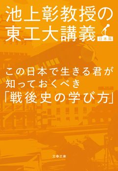
単行本刊行 2013年
政権与党の日本民主党（鳩山一郎総裁）と自由党（緒方竹虎総裁）が合併、自由民主党が誕生した。対する日本社会党も右派、左派が統一。これにより「改憲・保守・安保護持」の自民党vs.「護憲・革新・反安保」の社会党という二大政党対立の構図が成立した。いわゆる55年体制である。
3年後に実施された総選挙では定数467のうち自社両党で97％を占めた。しかし、以降1993年の細川政権成立まで政権交代はおこらず、自民党が38年間政権を握り続ける。その陰で社会党は徐々に力を失っていくことになる。
2009年には民主党政権が誕生したが、「政策の違う二つの政党が国民に選択を迫る」という真の二大政党制の姿にはほど遠い。その裏には「どの党も所詮同じ」という国民の諦念がある、と池上氏は指摘する。
「55年体制から連立政権ばかりになったわけ」をはじめ、「どうやって敗戦の焼け跡から再生したのか？」「『軍隊ではない』で通用するのか」等々、"池上節"が冴え渡る戦後史講義の実況中継、全15講。自国の歴史から学ぶ力をつけることは、現代を生きる上で必須の教養だ。
1956（昭和31）年
石坂泰三、経団連会長に就任
もう、きみには頼まない──石坂泰三の世界
城山三郎
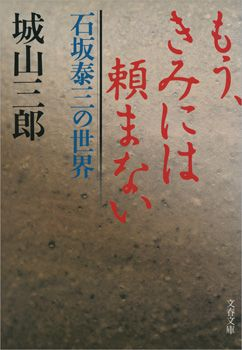
単行本刊行 1995年
東京帝大卒業後、逓信省に入省。第一生命社長を経て戦後は東芝社長として同社の再建を成し遂げた石坂泰三（1886～1975）は、この年、石川一郎の後を襲って経済団体連合会（経団連）会長に就任した。以降4期12年にわたる在任期間は日本の高度成長期と軌を一にする。財界にとどまらないその広範な影響力により、"財界総理"と称された。
戦後を代表する経済小説の書き手であった城山三郎は、なぜ石坂泰三を描いたのか。「あとがき」にこう記している。
「現職の大蔵大臣や総理に向かって、『もう、きみには頼まない』という啖呵の切れる気骨人だったということだけのためではない。（略）存在感のある人間が、いま求められている。（略）そうしたことから、わたしは腰を上げて調べはじめ、やがて、気骨や拳骨の人とか、存在感のある人とかいうだけでなく、純愛物語といってよいほどの妻想いや、無所属の時間を楽しむ余裕や、老年に至るまでの複々線的な生き方等々を知ることになった」
1957（昭和32）年
松本清張、「点と線」連載開始
点と線
松本清張
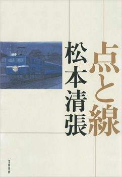
単行本刊行 1958年
1953年、「或る『小倉日記』伝」で第28回芥川賞を受賞した松本清張は、やがて推理小説に目を向けた。そしてこの年、「旅」誌に「点と線」の連載を開始。翌年単行本が刊行されるや、「眼の壁」とともにベストセラーとなる。清張を嚆矢とし、水上勉、有馬頼義らへと連なる「社会派推理小説」、すなわち社会性のあるテーマを中軸に据えたミステリの時代の幕開けである。
博多・香椎海岸で発見された、某省の課長補佐と料亭の女の死体。一見して疑いようのない心中事件と思われたが、その裏には汚職をめぐる恐るべき罠が隠されていた──。
推理小説ファンなら知らぬ者はない"空白の4分間"に代表される時刻表を駆使した精緻なトリックと、息をのむアリバイ崩し。日本推理小説史の記念碑的作品である本作にはまた、昭和30年代初頭という時代の匂いが色濃く漂っており、読者を瞬時に60年前へトリップさせてくれる。
1958（昭和33）年
皇太子妃に正田美智子さん決定
ミッチー・ブーム
石田あゆう
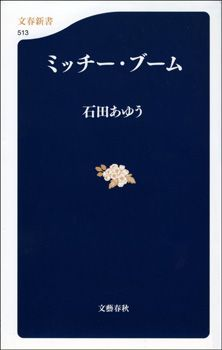
文春新書刊行 2006年
11月27日、宮内庁は記者会見を開き、皇太子妃に日清製粉社長・正田英三郎氏の長女、美智子さんが決定したことを発表した。翌年4月10日のご成婚で最高潮に達する、一連のミッチー・フィーバーの幕開けであった。
皇太子とのテニスコートの出会い。民間出身であること。均整のとれたスタイルとファッション。卓越した英語力。米「ニューズウィーク」誌で「完全な芸術品」と紹介された正田美智子さん。
「皇太子と美智子妃の恋愛から結婚に至った過程、若い二人の家庭形成、子育て方法やライフスタイルは、同世代の話題となったが、美智子妃はそれだけではなく、若い女性たちにとっての等身大のファッション・モデルとなった。彼女が身にまとう『ロイヤル・ファッション』報道は、戦後の皇室が欲した『開かれた皇室』イメージを広く世に意識させることとなる」（「プロローグ」より）
戦後の日本人の意識と皇室観を変えた女性の鮮やかな出現を、気鋭のメディア社会学者が当時の報道からたどり直し、その言動とファッションが日本人に与えたものが何だったのかを探り出す。
1959（昭和34）年
長嶋茂雄、天覧試合でサヨナラホームラン
プロ野球「衝撃の昭和史」
二宮清純
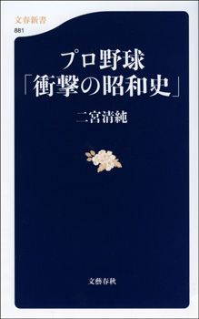
文春新書刊行 2012年
昭和天皇・皇后両陛下が巨人対阪神11回戦を観戦に、後楽園球場を訪れた。1959年6月25日。今に至るも日本プロ野球史上唯一の天覧試合である。
4対4で迎えた9回裏無死。打席に立ったのはプロ2年目、23歳の長嶋茂雄。阪神の怪物ルーキー村山実の投げた内角高めのストレートをフルスイングし、レフトスタンド上段に運んだ。サヨナラホームラン。
スポーツジャーナリストの二宮氏は、本書で天覧試合をはじめ、78年日本シリーズにおける大杉勝男の"疑惑のホームラン"、79年日本シリーズ"江夏の21球"など、球史に残る12の伝説を取り上げ、新事実を発掘している。
実は、天覧試合では両陛下の観戦終了時刻は午後9時15分に設定されていたという。長嶋のサヨナラが飛び出したとき、後楽園球場の時計は9時12分を指していた。余すこと、わずか3分。もし両陛下退出後のホームランだったら、これほどまでの伝説にはなっていなかったに違いない。ミスターは当時から"持っている"男だった。
1960（昭和35）年
浅沼稲次郎刺殺事件
テロルの決算
沢木耕太郎
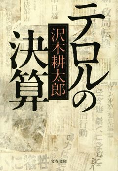
単行本刊行 1978年
10月12日、日比谷公会堂で自民、社会、民社の3党党首立会演説会が開催された。西尾末広（民社党委員長）に続いて演壇に立ったのは社会党委員長・浅沼稲次郎、61歳。"演説百姓"の異名を取った浅沼は、野次で騒然とする中、懸命に声を張り上げ続けた。午後3時4分。学生服姿の少年が突如壇上に駆け上がるや、演説中の浅沼に体当たりした。少年、山口二 矢 の手には、短刀が握られていた──。
「山口二矢について書いてみたい、とながく思いつづけてきた。（略）ひたすら歩むことでようやく辿り着いた晴れの舞台で、六十一歳の野党政治家は、生き急ぎ死に急ぎ閃光のように駆け抜けてきた十七歳のテロリストと、激しく交錯する。その一瞬を描き切ることさえできれば、と私は思った」（「あとがきＩ」より）
気鋭のノンフィクションライターだった沢木氏が、おのれの20代の「決算」と位置づけ、浅沼稲次郎刺殺事件を描き切った本作は、発表以来、多くの若者の心を揺さぶり続けてきた。沢木耕太郎の代表作にして日本ノンフィクションの金字塔。第10回大宅壮一ノンフィクション賞受賞作。
1961（昭和36）年
「シャボン玉ホリデー」放映開始
わかっちゃいるけど... シャボン玉の頃
青島幸男
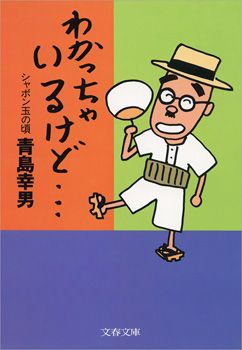
単行本刊行 1988年
メイン出演者はザ・ピーナッツ、ハナ肇とクレージーキャッツ（植木等、谷啓、犬塚弘、安田伸、桜井センリ、石橋エータロー）。そこに多彩なゲストが花を添え、コントや歌、トークが繰り広げられる。「シャボン玉ホリデー」（日本テレビ）こそ現代のバラエティ番組の源流であり、60年代──テレビの黄金時代の象徴だった。
同番組に構成作家として参画したのが、後の直木賞作家にして東京都知事、青島幸男、当時29歳。コント台本に腕を振るうのみならず、自らカメラの前に立ち「青島だァ！」とギャグを放つ。時代の空気を鋭敏にとらえ、それを笑いに転化するすべを知り尽くしていた青島は、またたく間にテレビの寵児となった。
本書は、青島が「シャボン玉ホリデー」を中心に、テレビ黄金時代のエピソードを綴った抱腹絶倒の一冊。坂本九、中尾ミエ、クリント・イーストウッド、なべおさみ、小松政夫、水原弘、勝新太郎、中山千夏、朝丘雪路、永六輔、前田武彦、大橋巨泉、野坂昭如、井上ひさし......みんな出てくるのだ！
1962（昭和37）年
「キューポラのある街」公開
昭和が明るかった頃
関川夏央
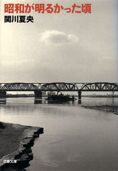
単行本刊行 2002年
埼玉県川口市を舞台にした青春映画「キューポラのある街」（日活／浦山桐郎監督）。ヒロインの可憐な姿に、観た者は皆、息を呑んだ。吉永小百合、17歳。小学生の頃から子役として活動してきた彼女は本作で一躍スターとなり、時代を象徴する映画女優へと成長していく。
関川氏は本書でこう書く。
「『石原裕次郎という物語』はこれまで何度も言及されたが、『吉永小百合という物語』は読み解かれることがなかった。彼女の『物語』は忘れられた。しかし、五〇年代後半から六〇年代前半にかけて活躍した映画俳優には当時の若い日本人が、『世界』を見すえた緊張感のもとに育てた希望が託され、日活映画には、たとえ荒唐無稽のうらみはあっても、時代精神がたしかに反映されている」
巷には未だ貧しさが残り、社会は大規模な変質を強いられつつあった。こうした世相を最も色濃く反映したのが映画であり、日活という映画会社と、石原裕次郎、そして吉永小百合というスターだった──。
現代社会の原型を形成した、昭和30年代の時代精神を描く長編評論。第19回講談社エッセイ賞受賞作。
1963（昭和38）年
米ケネディ大統領暗殺
ケネディ暗殺 ウォーレン委員会50年目の証言（上下）
フィリップ・シノン
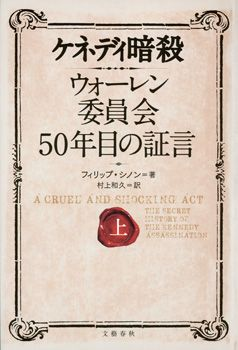
単行本刊行 2013年
11月22日、テキサス州を遊説中のジョン・F・ケネディ米大統領が銃弾に倒れた。1時間20分後、リー・ハーヴェイ・オズワルド容疑者逮捕。しかし2日後、オズワルドもまたジャック・ルビーに殺害される。オズワルドの死が事件の解明を困難にした。単独犯行説。複数犯説。囁かれる黒幕の存在。かくしてケネディ暗殺は戦後アメリカ最大のミステリーになった。
2008年。ニューヨーク・タイムズ記者、フィリップ・シノンに一本の電話がかかってきた。電話の主は「The Commission（委員会）」で働いていた者だ、と名乗った。ケネディ暗殺の真相をつきとめようとした超党派の委員会「ウォーレン委員会」の元スタッフだった。
同委員会にはダレス元CIA長官、将来の大統領フォードなどが名を連ねたが、実際に調査を担当したのは全米から集められた若く優秀な弁護士、検事たちだった。彼らがケネディ死後50年を期して集まり、シノンに何があったのかを書いてほしいと提案してきたのだ──。FBIとCIAは何を隠したのか？ 50年を経て初めて明かされる、ケネディ暗殺調査の真相。
1964（昭和39）年
東京オリンピック開催
東京五輪1964
佐藤次郎
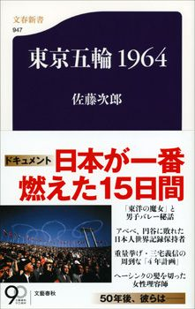
文春新書刊行 2013年
日本が敗戦から立ち直ったことを世界に示し、また、高度経済成長のジャンピングボードとなった東京オリンピック。その社会的影響についてはさまざまな角度から議論されてきたが、では、参加した選手やスタッフ、観客にとっては、どんな大会だったのか？
東京新聞で長年、五輪を取材してきた著者が、本書で15日間の会期を15の視点で再現。「坂井義則 聖火を灯した最終ランナー」「佐々木吉蔵 ボブ・ヘイズの信頼を勝ち取った名スターター」「田中聰子 メダルの重圧を背負った渾身の泳ぎ」「寺澤徹 アベベ、円谷に敗れた42.195キロ」「杉山茂と西田善夫 国際テレビ中継を支えたNHKのスタッフたち」など、さまざまな立場にいた人たちのさまざまな思いが、五輪を支えていたことを教えてくれる。東京五輪2020を考えるにあたって必読の一冊。
1965（昭和40）年
池田勇人前首相死去
危機の宰相
沢木耕太郎
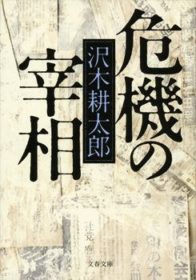
単行本刊行 2006年
前年10月25日、東京オリンピック閉幕の翌日、喉頭がんを患っていた池田首相は退陣を表明し、後継に佐藤栄作を指名した。8月13日死去。享年65。
1960年、安保闘争後の騒然とした世情の中で首相になった池田は、次の時代のテーマを経済成長に求めた。すなわち「所得倍増」。
「戦後三十年を通じて、この二つの言葉（「アンポ反対」「所得倍増」）ほど社会全体に強い影響を与えたものはない。一九六〇年代はアンポに明け、バイゾーに暮れた。一九六〇年代とは、『アンポ反対』を叫んだ人びとがやがて『所得倍増』の幻想にからめとられ、流れに巻き込まれていった時代といえる。その意味では、『所得倍増』こそ戦後最大のコピーライティングだったといえるかもしれない」（本書より）
所得倍増計画、それは大蔵省で長く"敗者"だった池田、田村敏雄、下村治という3人の男たちの夢と志の結晶でもあった。政治と経済が激突するスリリングなドラマを沢木氏が鮮烈に描く。あのとき、経済は真っ赤に熱をはらんでいた。
1966（昭和41）年
文化大革命
合本 大地の子
山崎豊子
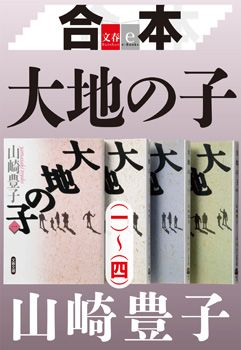
単行本刊行 1991年
中国共産党首脳部内の権力闘争に打ち勝つため、毛沢東は修正主義打倒を掲げ、大衆を扇動した。いわゆる文化大革命。中国全土を巻き込んだ騒乱は66年に本格的に始まり、76年、毛の死去をもって終わった。粛清、餓死による犠牲者は数十万人あるいは1,000万人以上ともいわれ、未だ全容は定かでない。
山崎豊子が8年の時を費やして書き上げた本作のストーリーには、現代中国の転換点であるこの出来事が大きく関わっている。旧満州の日本人開拓村に生まれたが戦争孤児となり、陸一心という名で中国に育った男。"小日本鬼子"として辛酸を舐め、運命に翻弄されながらも中国発展に力を尽くす一心。しかしそこに文化大革命という暴風が襲いかかる──。
"取材の鬼"と称された山崎は、連載開始前の中国取材に3年を費やした。その中には胡耀邦総書記（当時）との単独会見も含まれる。膨大な史実の上に山崎が紡いだ、日本と中国、二つの祖国を背負った男の物語。その人生は読む者の心を興奮と感動で震わせる。全日本人、必読。第52回文藝春秋読者賞受賞作。
1967（昭和42）年
チェ・ゲバラ、ボリビアで死す
チェ・ゲバラ伝 増補版
三好徹
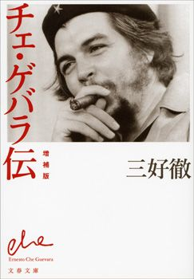
単行本刊行 1971年
増補版刊行 2014年
アルゼンチンの裕福な家に生まれたチェ・ゲバラは、貧困と圧制と腐敗の覆う現実を目のあたりにし、医師となったのちキューバ革命へと身を投じた。
1959年、フィデル・カストロとともに革命を成就させたゲバラだったが、6年後、大臣の座を捨ててキューバを離れ、再び革命の場に自らを置く。アフリカ、東欧などを流転の末、南米ボリビアで軍事政権打倒のゲリラ戦を繰り広げていた10月8日、政府軍に捕らえられ、翌日銃殺された。享年39。
チェ・ゲバラを革命へと駆り立てたものは何だったのか？ 遺した言葉が「ユネスコ世界記憶遺産」に登録され、今なお全世界で語り継がれる伝説の男、ゲバラを描いた不朽の傑作評伝。最近判明した事実も盛り込んだ増補版。
1968（昭和43）年
石原慎太郎、参院全国区でトップ当選
国家なる幻影 わが政治への反回想（上下）
石原慎太郎
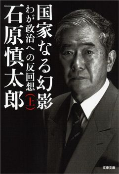
単行本刊行 1999年
一橋大学在学中の1956年、デビュー作「太陽の季節」で第34回芥川賞を受賞した石原慎太郎氏。弟・裕次郎とともに、その存在はまさに昭和30年代の太陽だった。この年、参議院選挙の全国区に初出馬し、300万票という未曾有の大量得票でトップ当選を果たしたのも、当然の結果だったといえよう。
その後、小説を書き続けるとともに政治家として環境庁長官、運輸相、そして東京都知事と、政治家として50年近く活動した石原氏が、都知事就任前に記したのが本書である。
三島由紀夫からの公開状、田中角栄との対決、青嵐会の結成、環境庁長官就任、四十日抗争、盟友・中川一郎とベニグノ・アキノの死、自民党総裁選出馬。
政治という"魔の海"の航海で直面した暗闘、謀略、欲望、そして死を、圧倒的な迫力で記した回想録。政治の世界は喜劇が悲劇であり、背信が誠実である──。
1969（昭和44）年
東大紛争
東大落城 安田講堂攻防七十二時間
佐々淳行
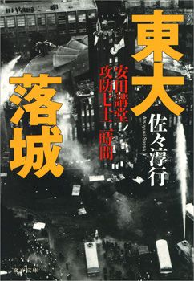
単行本刊行 1993年
1960年代末、安保延長反対、ベトナム反戦、授業料値上げ反対などを争点とし、学生運動のエネルギーは頂点に達した。
日大では秋田明大議長率いる日大全共闘が、大学側の使途不明金発覚を機に大規模な闘争を組織。"大衆団交"で大学理事の総退陣を迫った。東大でも山本義隆を議長とし東大全共闘が結成され、キャンパスを封鎖。大河内一男総長を辞任に追い込み、東大は69年度の入試中止を余儀なくされた。
1月18日、加藤一郎総長の要請により、封鎖排除を目的とした警視庁機動隊が東大キャンパスに進入。午後1時16分頃、学生が籠城する"本丸"安田講堂に対し、本格的な攻撃を開始した。放水に煙る時計塔、屋上から投下される人頭大の石塊、火炎瓶に灼かれる機動隊員。そのとき、作家・三島由紀夫から緊急電話が──！
国民が注視した大学紛争の天王山、安田講堂攻防戦を、警視庁警備部警備第一課長として現場指揮にあたった筆者が克明に綴る。第54回文藝春秋読者賞受賞作。
1970（昭和45）年
三島事件
五衰の人 三島由紀夫私記
徳岡孝夫
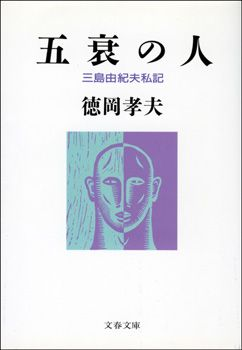
単行本刊行 1996年
戦後を代表する作家、三島由紀夫。『仮面の告白』『潮騒』『金閣寺』『宴のあと』『午後の曳航』など名作・問題作を世に問う一方、自らの映画化作品に出演し、ボディビルで鍛え上げた肉体をグラビアで披露するというその行動は、従来の小説家のイメージを覆した。
三島は政治的発言にも積極的だった。特に60年代半ば頃からの言動は憂国的色彩を強め、自衛隊体験入隊、私兵組織「楯の会」結成へと至る。
11月25日。楯の会メンバー4人を従えた三島は、日本刀を携え、自衛隊の市ヶ谷駐屯地に赴いた。総監室で益田兼利東部方面総監と懇談中、突如彼を拘束、そしてバルコニーに立ち、集まった自衛隊員に「天皇陛下のための決起」を呼びかける演説をおこなった。総監室に戻ると、割腹自殺を遂げた。享年45。
三島は市ヶ谷に赴く前、決死の檄文を二人の記者に託した。そのうちの一人が徳岡孝夫氏である。なぜ三島は檄を氏に託したのか。二人の交友の中に立ち現れる三島由紀夫は、多彩で、実に「面白い人」だった──。四半世紀を経て初めて語られた哀切の三島像。人が人を回顧した文章で、これを超えるものがあるだろうか。第10回新潮学芸賞受賞作。
1971（昭和46）年
沖縄返還協定調印
評伝 若泉敬──愛国の密使
森田 彦
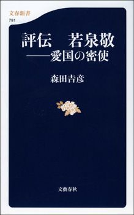
文春新書刊行 2011年
戦後、米国の統治下にあった沖縄。1964年に首相に就任した佐藤栄作は、沖縄返還実現を重要課題に掲げ、さまざまなチャンネルを用いて米国との交渉を試みた。そして6月17日、沖縄返還協定の調印を実現。翌72年5月15日をもって沖縄は日本に復帰した。
「君に委すから、全部まとめてきてくれ給え」──交渉にあたり、佐藤首相の"密使"として動いた男がいた。国際政治学者・若泉敬。
舞台裏で交わされた「核の密約」は、いかなる背景のもとに成立したのか。長い隠棲の後、若泉はなぜ『他策ナカリシヲ信ゼムト欲ス』（1994）の刊行に至ったのか。波瀾の人生をどう過ごしたか。そして、戦後の「現実主義」に、どのような影響を与えたのか。
多くの証言と新たな解釈により、気鋭の学者が「密約」にとどまらない若泉敬の全体像に迫った評伝。実は、若泉敬こそが日本の運命を決めたのだ。
1972（昭和47）年
連合赤軍あさま山荘事件
一九七二 「はじまりのおわり」と「おわりのはじまり」
坪内祐三
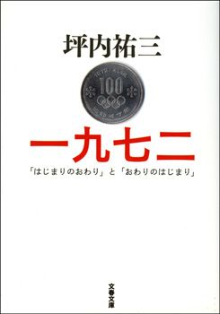
単行本刊行 2003年
新左翼組織、赤軍派と京浜安保共闘。それぞれ強盗や銃砲店襲撃などの非合法活動を通して資金と武器を蓄えてきた両者が合体、連合赤軍が誕生した。
1971年暮れ、山梨県の山間部で軍事訓練をおこなった連合赤軍だが、その過程で内部対立が先鋭化、「総括」と称するリンチが繰り広げられた。のちに12人の死者を出していたことが明らかになる。
2月、山から下りたメンバーが逮捕される。警察は大規模な山狩りを開始した。追われた坂口弘ら5人は2月19日、軽井沢の楽器メーカー保養所「あさま山荘」に、管理人の女性を人質にとって籠城した。以後28日の全員逮捕に至るまで、3人の死者を出す凄惨な攻防戦が繰り広げられた。
坪内氏は本書で、この年を「高度成長期の大きな文化変動が完了した年」と位置づける。連合赤軍があさま山荘に立てこもり、宮の森シャンツェに3本の日の丸が揚がり、田中角栄が列島改造を叫び、ニクソンが突如北京に赴いた──。高度成長期の生真面目さとエンタテインメント志向の萌芽が交錯した、奇妙な季節。熱い時代の息吹を伝える新感覚の文化評論。
1973（昭和48）年
第1次オイルショック
狼がやってきた日
柳田邦男
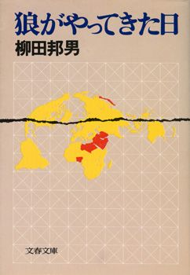
単行本刊行 1979年
10月、第四次中東戦争の勃発により、中東産油国は原油価格の引き上げを発表。西側先進国に激震が走った。とりわけサウジアラビア、クウェートなどの原油に大きく依存する日本経済が受けた打撃は甚大だった。
街のネオンサインは消え、テレビは深夜放送をとり止め、人々はトイレットペーパーを買うために開店前のスーパーに列をなした。翌年の経済成長率は戦後初のマイナス成長に沈み、福田赳夫蔵相が"狂乱物価"と称するまでにインフレが加速。高度経済成長の宴から一転、日本経済は戦後最大の危機に陥った。
そのとき、政府は、官僚は、商社マンは、庶民は何を考え、どう行動したのか？ 本書は未発表の膨大な資料と多くの人々の証言をもとに、当時の状況を克明に再現した"ドキュメント石油危機"である。
「国際的事件に対する日本の対応には、いつも何かしら共通したパターンがあるように見える。戦後最大の転換期となった石油危機の日本的反応を検証することは、その共通パターンを確認し、国際化時代の日本のあり方を考えるうえで、きわめて重要であると思う」（「文庫版へのあとがき」より）
1974（昭和49）年
田中角栄首相辞任
田中角栄 その巨善と巨悪
水木楊
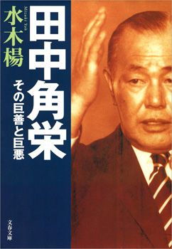
単行本刊行 1998年
1972年の首相就任以降、"コンピュータつきブルドーザー"と呼ばれた突破力で日中国交正常化などの業績を挙げてきた田中角栄。その足下をすくったのは、気鋭のジャーナリストのペンだった。
「文藝春秋」74年11月号に「田中角栄研究」（立花隆）と「淋しき越山会の女王」（児玉隆也）が掲載されるや、国会は田中の金脈問題を激しく追及。12月9日、田中は内閣総辞職に追い込まれた。
田中角栄は、戦後日本の生んだ、まぎれもない天才である。比類ない強烈な磁力を放射した人物だった。その業績は赫々たるものであり、歴史はその価値までを否定できない。が、日本の社会を歪めもした。スケール大きく生きた、毀誉褒貶相半ばの男であり、まさに戦後日本の光と影を象徴する政治家だといえよう。
徒手空挙だった彼を権力の頂点に登らせ、そして破滅させた原因とは何だったのか？ 善と背中合わせの悪、悪と共存する善──"田中角栄という物語"を水木氏が鋭く描く。
1975（昭和50）年
ベトナム戦争終結
サイゴンのいちばん長い日
近藤紘一
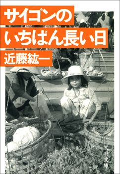
単行本刊行 1975年
1961年に米国大統領に就任したジョン・F・ケネディは、南ベトナムの共産化を防ぐためとして、ベトナム内戦へ介入を始めた。64年のトンキン湾事件を契機に介入は本格化、全面戦争の様相を呈した。米軍は巧みにゲリラ戦を展開する北ベトナム軍に手を焼き、長期戦の泥沼に引きずり込まれていく。パリ和平協定を締結し、米軍がようやく全面撤退を果たしたのは73年、ニクソン政権下でのことだった。
米軍が去っても内戦は終わらない。北ベトナム軍は南下を続け、ついに南ベトナムの首都サイゴンを陥れた。ときに75年4月30日。
産経新聞の近藤紘一は、陥落の一月前、特派員としてサイゴンに着任した。すでに目前には北ベトナム軍の戦車が迫っており、南ベトナム政権が消滅する瞬間を目撃した数少ない記者の一人となった。
本作は、数あるベトナム戦争関連ノンフィクションのなかでも白眉といえる、近藤の代表作である。通奏低音として流れているのは、戦争の国に生きる人間の悲しみとしたたかさをすくい上げる、近藤の優しい視線。86年、45歳で早世した近藤の葬儀で、産経の先輩に当たる司馬 太郎が弔辞を読んだ。
「君はすぐれた叡智のほかに、なみはずれて量の多い愛というものを、生まれつきのものとして持っておりました」「近藤君、君はジャーナリストとして（略）不世出の人でした」
1976（昭和51）年
ピンク・レディー、デビュー
夢を食った男たち 「スター誕生」と歌謡曲黄金の70年代
阿久悠
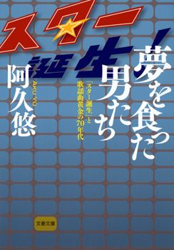
単行本刊行 1993年
高校の同級生だった根本美鶴代と増田恵子。デュオを結成し、オーディション番組「スター誕生！」に挑み、合格する。
8月にピンク・レディーの名でデビューするや、「ペッパー警部」がスマッシュヒット。続いて「S・O・S」「ウォンテッド（指名手配）」「UFO」「サウスポー」「透明人間」等々ヒットを連発。3年足らずでシングルを1,000万枚売り上げた。子どもも大人も土居甫 考案の振り付けを真似て踊り、歌った。そのブームはまさに社会現象。今に至るも、ピンク・レディーと同じ域に達したアイドルはいない。
「スター誕生！」の審査員として二人を見初めた人物こそ、彼女たちの絶頂期の全シングルを手がけることになる阿久悠だった。
同番組はピンク・レディーのみならず、山口百恵、桜田淳子、森昌子の"花の中三トリオ"から中森明菜、小泉今日子に至るまで数々のスターを輩出、歌謡曲黄金時代をつくりあげた。その当事者としてムーブメントの中心に座り続け、5度の日本レコード大賞受賞、シングル総売上6,800万枚など空前の業績を挙げた戦後最大の作詞家による同時代ドキュメント。
1977（昭和52）年
鄧小平復活、最高権力者への道へ
鄧小平秘録（上下）
伊藤正
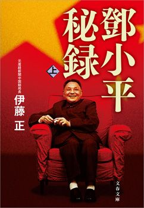
単行本刊行 2008年
毛沢東、周恩来らとともに抗日戦争、国共内戦を戦い抜き、中国建国の一翼を担った鄧小平。
1966年、共産党総書記だった鄧は、毛の主導する文化大革命のあおりを受けて指弾され、追放された。周の助けで復活するが、76年、周が亡くなると江青ら四人組の攻撃を受け再び追放。毛の死去、四人組の逮捕を経て翌77年、またもや蘇る。そして華国鋒との権力闘争に勝利し、ついに80年初頭、中国の最高権力者の座に就いた。
いまや世界第2位の経済大国としてグローバル経済の要となった中国だが、その政治・経済路線は鄧小平が敷いたものに他ならない。鄧は、最高権力者として、いかにして今日につながる道を開いたのか？ 中国取材40年のベテラン伊藤氏が、豊富な取材と膨大な史料を駆使して描き切る。貧富の格差など現代中国の矛盾も広がった中国の行く末が注目されるいま、必読の書。
1978（昭和53）年
大平政権成立
茜色の空 哲人政治家・大平正芳の生涯
辻井喬
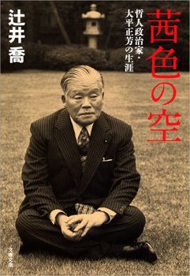
単行本刊行 2010年
池田勇人の側近として大蔵省から国政へ転じた大平は、外相、通産相、蔵相を歴任。12月、第68代首相に就任した。
大平は在任中、自民党内の権力闘争に大きなエネルギーを費やさざるを得なかった。1979年衆院選の敗北を受け勃発した福田赳夫ら反主流派との四十日抗争。辛くも勝利を得、第二次政権が発足したものの、余波は続いた。翌年、野党が提出した内閣不信任決議案の採決に反主流派が欠席し、まさかの可決。大平は衆参同日選を決断した（ハプニング解散）。しかし選挙戦さなかの80年6月12日、過労からくる心不全に倒れた。享年70。
生前「鈍牛」「アーウー」と揶揄されながら、没後30年を経て、戦後政界随一の知性派として評価が高まる大平。人物の評価は「棺を蓋いて事定まる」というが、昭和の政治家の中ではその言葉が最も当てはまる一人といってよいだろう。
壮絶な"戦死"を遂げた悲劇の宰相の人生を、実業家・堤清二として大平と親交があった辻井喬が愛惜とともに描く。
1979（昭和54）年
スリーマイル島原発事故
恐怖の2時間18分
柳田邦男
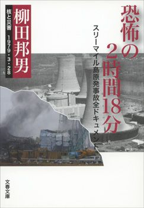
単行本刊行 1983年
3月28日午前4時。スリーマイル島原子力発電所（米国ペンシルバニア州）のコントロールルームに突如警報ベルが鳴り響き、警報ランプが点った。ランプの数は見る間に20、30、60......と増えていき、30秒後には137に達した。スリーマイル島原発事故の幕開けである。
直接の引き金は二次冷却水の主ポンプの故障だった。一次冷却水は除熱されず、加圧器逃がし弁から流出。やがて炉心の上部が露出し、炉内は沸騰状態。ついには燃料棒が崩壊し始める。破滅的事態まであとわずか。
逃がし弁が開いたままになっていることに作業員の一人が気づき、閉めたのは、2時間18分後のことだった。
州知事は発電所より5マイル以内に避難命令、10マイル以内に屋内待機勧告を出した。事故の処理には3カ月を要した。国際原子力事象評価尺度レベル5。
冷却水停止、炉心圧力上昇、燃料棒損傷、避難パニック。この事故は、まさに「今」を予言していた。安全とされた巨大システムは、なぜ崩れたのか？ 技術への過信、人間の判断の危うさ、情報の混乱──徹底的な現地取材で構成した緊迫のドキュメント。原発問題を考える上で必読の書。
1980（昭和55）年
新宿西口バス放火事件
炎を越えて 新宿西口バス放火事件後三十四年の軌跡
杉原美津子
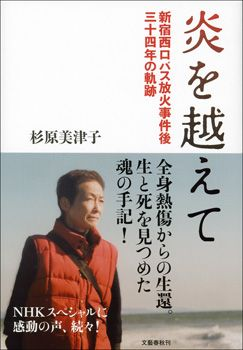
単行本刊行 2014年
8月19日午後9時すぎ、新宿駅西口に停車していた路線バスから火の手が上がり、瞬時にバスを包んだ。6人死亡、14人重軽傷の大惨事。38歳の男、Mが火のついた新聞紙とガソリンの入ったバケツを車内に投げ込んだのだ。
翌日の讀賣新聞一面に掲載された、炎上するバスを捉えた写真。現場に居合わせたカメラマン石井義治氏が撮ったものだが、偶然にも氏の妹、美津子が事件の被害者となっていた。全身80％の大火傷を負ったものの辛うじて生還した美津子。兄の撮った写真が兄妹の仲に陰を落とす。いつまでも「被害者」として過剰に接する母からの自立。不倫相手との結婚、死別。
一方で美津子は、加害者Mの不幸な生い立ちを知るにつれ、「自分もまた彼を加害者に追いやった側の一人ではないか」と考え、刑務所で面会、文通し、赦そうと試みる。それで自分も被害者の冠を外し、歩み出せるのではないか──しかしそれもMの獄中自殺によって絶たれる。
自分の人生とは何だったのか。かくも過酷な運命を生き、死ぬことの意味は何なのか。事件当時の輸血がもとでC型肝炎になり、肝臓がんを発症して余命宣告を受けた美津子が、生と死を納得するための思索を綴った魂の手記。2014年死去。享年70。
1981（昭和56）年
千代の富士初優勝
千代の富士一代
石井代蔵
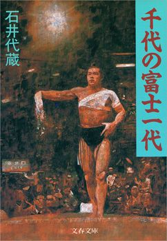
文春文庫刊行 1991年
大相撲初場所千秋楽。初日から14連勝と快進撃を続けていた関脇千代の富士に、13勝1敗で追う最強の横綱、北の湖が立ちはだかった。本割りは北の湖の吊り出しに敗れる。そして優勝決定戦。右四つから伝家の宝刀、上手出し投げ一閃。北の湖はバッタリ両手両膝をついた。千代の富士初優勝。
千代の富士はこの優勝で大関昇進、そして名古屋場所後には横綱昇進を決めた。"ウルフ"と称される精悍なマスクとボディビルダーのごとき筋骨隆々の上半身。従来の力士像を覆すニューヒーローの誕生に、日本中が"ウルフフィーバー"に沸き立った。以降1991年の引退までに31回の優勝を積み上げ、80年代の大横綱として君臨した。
東京見物という話につられて九重部屋に入門した秋元貢少年。だがその相撲人生前半は骨折や脱臼のため番付を上ったり下ったり、苦難の連続だった。怪我を克服して稀代の横綱千代の富士となるまでを、千代の山、北の富士という二人の師匠の人生などもからめて描く、相撲小説の名手・石井氏の傑作。
1982（昭和57）年
浜松基地航空祭墜落事故
ブルーインパルス 大空を駆けるサムライたち
武田賴政
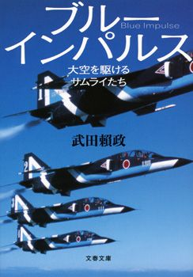
単行本刊行 2011年
1960年に誕生した航空自衛隊の曲技飛行隊、ブルーインパルス。64年の東京オリンピック開会式で青空に白煙の五輪マークを描き、その名を天下に知らしめた。
11月14日、浜松基地航空祭でブルーインパルスのT-2機6機による展示飛行がおこなわれた。垂直降下から6方向に散開する「下向き空中開花」を実施中、4番機の引き上げが遅れた。4番機はそのまま地上に激突。パイロットの高島潔1尉は殉職、地上の住民12人が重軽傷を負った。
この事故を7万人の観衆が目撃したが、航空専門誌の記者として取材に当たっていた武田氏もその一人だった。氏は事故の関係者全員が定年退職した2008年から一気に証言を集め、事故の全容を解き明かすに至る。
東京五輪の栄光、浜松の悲劇。累計墜落9機、殉職者8名。死と隣り合わせの危険を冒してまで、なぜブルーインパルスは飛び続けるのか？ 華麗なアクロバット飛行の裏に隠された、パイロットたちの苦難の歴史がここにある。
1983（昭和58）年
トヨタ・GM提携合意
トヨタ・GM 巨人たちの握手
佐藤正明
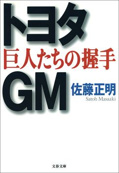
単行本刊行 1993年
1982年3月、ニューヨーク。トヨタ自動車工業の豊田英二社長と米ゼネラルモーターズのロジャー・スミス会長が、極秘裏に会談をもった。そこで話し合われたのは、「両社が合弁会社を設立し、米国工場で小型車を生産すること」だった。
トヨタ社内の慎重論を乗り越え、83年、基本合意が成立。日本最大の自動車メーカーと世界最大の自動車メーカーとの、歴史的な握手だった。翌84年に合弁会社NUMMIが設立され、以降20年以上にわたりトヨタ、シボレーなどの乗用車を送り出すことになる。
両社の提携交渉をスクープし、82年度の新聞協会賞を受賞したのが、当時日本経済新聞産業部の記者だった佐藤氏である。いまやGMを追い越し、世界最大の自動車メーカーに上り詰めたトヨタ。ローカルメーカーから世界的企業への決定的な転換点は、まさにこのGMとの提携にあったといえよう。「トヨタ一人勝ち」の原点を、誰よりも自動車産業を知る男が鮮やかに描き出す。
1984（昭和59）年
植村直己、マッキンリーで消息を絶つ
青春を山に賭けて
植村直己
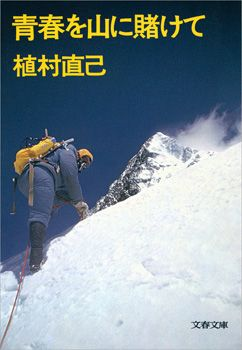
単行本刊行 1971年
1970年、日本人初のエベレスト登頂。同年、世界初の五大陸最高峰登頂。78年、世界初の単独北極点到達。植村直己は、日本を代表する登山家・冒険家として赫々たる業績を挙げてきた。
2月12日、世界初のマッキンリー冬期単独登頂を果たしたが、翌日の無線交信を最後に連絡を絶った。今に至るも消息は不明。43歳だった。同年、国民栄誉賞受賞。
本書は、植村がエベレスト登頂の翌年、30歳のときに出版した手記である。家の手伝いからは逃げ、学校ではイタズラばかりしていた植村少年は、明治大学山岳部で美しい山々と出会う。やがて100ドルを手に日本を脱出し、さまざまな困難を乗り越え、ついに偉業を達成する。野口健氏ら後進に大きな影響を与えた、ケタはずれの世界放浪記。植村直己こそ世紀の冒険野郎だ！
1985（昭和60）年
女子プロレスブーム
1985年のクラッシュ・ギャルズ
柳澤健
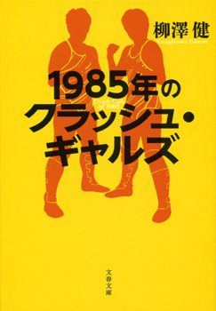
単行本刊行 2011年
1970年代の女子プロレスブームの立役者がジャッキー佐藤、マキ上田のビューティ・ペアなら、80年代の主役は紛れもなく長与千種とライオネス飛鳥のクラッシュ・ギャルズだった。
84年にペアを結成し、ダンプ松本、ブル中野らの「極悪同盟」と激しい抗争を繰り広げるクラッシュ・ギャルズ。翌年、二人の人気は最高潮に達した。8月28日。大阪城ホールは十代の少女で埋め尽くされた。長与千種対ダンプ松本、敗者髪切りマッチ。少女たちの祈るような瞳がリング上の一点に注がれる。クラッシュは私たちの苦しみを背負って闘っている。二人のように、もっと強く、もっと自由になりたい──。
「十代の少女たちに自分の基準などない。人生の正解は飛鳥であり、千種だった。親衛隊とはすべてを知り、共有するためのシステムであり、隊員たちは飛鳥の不器用さも、千種の計算高さも、すべてわかった上で愛した」（「あとがき」より）
長与千種とライオネス飛鳥、そして二人に熱狂した少女たち。その25年の物語。
1986（昭和61）年
男女雇用機会均等法施行
女たちのサバイバル作戦
上野千鶴子
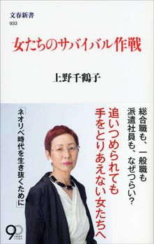
文春新書刊行 2013年
職場での採用、待遇などについて男女の差別を禁止した男女雇用機会均等法。法律の上では"仕事における男女平等"が実現した。
では、あれから30年、働く女性は幸せになったのか？
女性学の第一人者、上野氏の答えは「イエス&ノー」だ。バリキャリは、依然として男性中心の職場の中で、体を壊したり家庭生活が破綻したりしがち。一般職は、社内でお局さま扱いを受けて煮詰まる。派遣社員は安い給料のまま将来の保証もない。
自由を手に職場進出を果たしたはずなのに、なぜなのか。それぞれ追いつめられた状況にあるのに、なかなか手を取り合えない女性たち。誰の意図のもと、どのような経緯で女性たちは"分断"されたのか。上野氏はそのルーツを雇用機会均等法に求める。
家事や育児を背負いながら働かざるをえず、脱落したら「自己責任」。もはや「お局さま」にすらなれない厳しい時代をサバイバルするための必読書。
1987（昭和62）年
中嶋悟、F1参戦
F1 走る魂
海老沢泰久
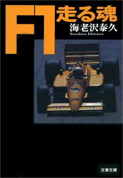
単行本刊行 1988年
全日本F2、国際F3000、ル・マン24時間などに参戦しつつ、1984年よりホンダF1のテストドライバーを務めていた中嶋悟。87年、ついにロータス・ホンダより日本人初のF1フル参戦を果たした。当時34歳。チームメイトは27歳のアイルトン・セナだった。
本書は、ルーキー中嶋の奮闘を中心に、圧倒的な強さを誇るナイジェル・マンセル、ネルソン・ピケ、セナのホンダ・エンジン勢と、迎え撃つアラン・プロスト、ゲルハルト・ベルガーらの、87年の熱き闘いを生き生きと描いている。
この年フジテレビがシーズン全戦の放映を開始し、10年ぶりの日本グランプリが鈴鹿サーキットで開催。日本のファンは中嶋の走りを逐一目撃することになった。中嶋は87年シーズン全16戦出走、10戦完走。最高位4位（イギリスGP）、7ポイント獲得、ドライバーズ・ランキング11位。
中嶋は以降91年まで5シーズンにわたり参戦する。それはスーパースター、アイルトン・セナの覇権時代とも重なり、日本に空前のF1ブームが巻き起こった。
1988（昭和63）年
リクルート事件
リクルートという奇跡
藤原和博
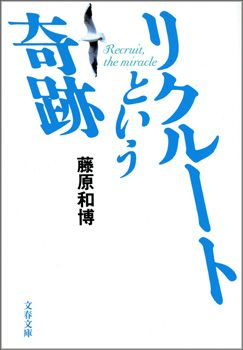
単行本刊行 2002年
6月18日、朝日新聞朝刊社会面に「『リクルート』川崎市誘致時 助役が関連株取得 公開で売却益1億円」という見出しが躍った。この記事こそ、政界を揺るがすリクルート事件の発端だった。
リクルートの子会社、リクルートコスモスの未公開株を譲渡された政治家は竹下首相、中曽根前首相、宮沢副総理、安倍自民党幹事長ら90人に及び、真藤恒NTT前会長、そしてリクルートの創業者、江副浩正会長ら多数の逮捕者を出した。国民の間には政治不信が高まり、翌年6月、竹下内閣は総辞職。同年の参院選で自民党は過半数割れの歴史的惨敗。この状態は現在に至るまで尾を引いている。
一方、リクルートは蘇った。事件に追い打ちをかけたバブル崩壊、そして1992年のダイエーによる買収など幾多の危機を乗り越え、2014年には東証一部に新規上場し、時価総額2兆円の企業となった。
リクルートはなぜ復活できたのか。なぜユニークな人材を次々と輩出し、時代の先端を走り続けてこられたのか。同社幹部としてそのすべてを見届けた著者が明かす、"奇跡の企業"の秘密。
1989（昭和64/平成元）年
昭和天皇崩御
昭和天皇伝
伊藤之雄
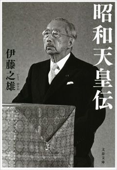
単行本刊行 2011年
1987年、昭和天皇は天皇として史上初めて開腹手術を受けた。以降、その体調は一進一退を繰り返し、公式行事出席も88年8月の全国戦没者追悼式が最後となった。
1月7日、87歳で崩御。同日、明仁親王が即位。翌日、元号は平成と改まった。
「誕生から崩御まで、天皇を中心に昭和という時代を、なるべく信頼できる史料や著作にもとづいて、じっくり考えてみることは、現在の私たちの足元を見つめなおす機会となるだろう」（「はしがき」より）
生気に満ちた皇太子時代。即位直後の迷いと苦悩。戦争へと向かう軍部を止めようとする懸命の努力。円熟の境地による戦争終結の決断。強い道義的責任の自覚を持って日本再建に尽力する戦後──。
母・貞明皇太后、妻・良子皇后、子・今上天皇と美智子妃などとの生々しい家庭生活にまで筆を費やした、「昭和」そのものである人物を描いた決定的評伝。第15回司馬 太郎賞受賞作。
1990（平成2）年
東久邇宮稔彦王死去
不思議な宮さま 東久邇宮稔彦王の昭和史
浅見雅男
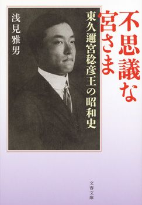
単行本刊行 2011年
1月20日に死去した東久邇宮稔彦王。前年の昭和天皇に続き、「昭和」の象徴が逝った。享年102。歴代首相の中で最長寿を保った。
1945年8月17日、ポツダム宣言受諾を受け鈴木貫太郎内閣は総辞職。4カ月の在任中、天皇の信頼篤い鈴木は終戦工作に奔走し、見事に着地させた。
鈴木のあと、第43代首相として史上唯一の皇族内閣を率いたのが稔彦王である。9月2日の降伏文書調印、同5日の「一億総懺悔」を唱えた施政方針演説など、敗戦処理に一定の区切りをつけ、10月5日総辞職。首相在任54日間は史上最短である。
実は日米開戦直前の41年秋、東條英機の対抗馬と目されたのもこの宮さまだった。日本の危機に、二度にわたり「切り札」として期待された宮さまの実像は、しかしあまり伝えられていない。新史料を駆使した本書で明かされるのは、波乱万丈、痛快無比、勝手放題のその実力者ぶり。臣籍降下騒動、女性問題、右翼との危険な関係などなど、興味津々の人生が初公開される。
1991（平成3）年
イトマン事件
平成経済事件の怪物たち
森功
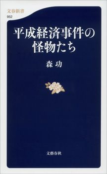
文春新書刊行 2013年
大阪の総合商社イトマンの不正経理をめぐる一連の疑惑は、戦後最大といわれる経済事件に発展した。
7月、大阪地検特捜部は河村良彦（イトマン社長）、伊藤寿永光（経営コンサルタント）、そして最後の大物フィクサーと呼ばれた許永中らを特別背任等の容疑で逮捕した。イトマンとメインバンクの住友銀行から流出したカネは実に3,000億円。その行方は解明されず、闇に消えた。河村は7年、伊藤は10年、許は7年半の懲役刑が確定。
本書は、週刊誌記者を経て独立し、権力のタブーに切り込むジャーナリストとして健筆を振るう森氏が、平成の世を騒がせた経済事件の主役15人を描く。許永中、江副浩正（リクルート事件）、磯田一郎（住友銀行の"天皇"）、高橋治則（イ・アイ・イ）、金丸信（佐川急便事件）......彼ら"怪物"を通して、現代日本の真の姿が見えてくる。
1992（平成4）年
天皇訪中
中国共産党「天皇工作」秘録
城山英巳
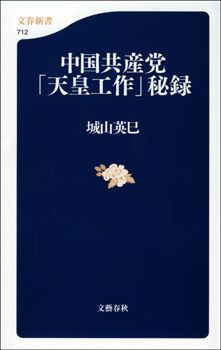
文春新書刊行 2009年
10月23日、天皇陛下が中国の土を踏んだ。北京・人民大会堂で開かれた楊尚昆国家主席主催の歓迎晩餐会で、天皇は「わが国が中国国民に対し、多大の苦難を与えた不幸な一時期」に言及、以降28日まで滞在した。日中国交正常化20周年にあたる年に実現した、史上初めての天皇訪中だった。
天皇訪中は、中国にとって70年代からの悲願だった。1972年9月、北京で日中共同声明に調印した田中角栄首相は、帰国の途につく際、周恩来総理にこう話しかけられた。
「天皇陛下によろしく」
周のこの発言は、毛沢東主席の意向を受けてのものだった。また84年には、中国政府は親中派の田中元首相を通じ、昭和天皇の訪中を極秘裏に画策してもいた。
毛、周、鄧小平、胡耀邦、楊尚昆......彼らはなぜ「天皇」にこだわったのか。時事通信の敏腕外信記者である城山氏が、日中両政府中枢をはじめ、150人に及ぶ関係者への取材により、初めて浮かび上がらせた日中外交の最奥部。それは、"インテリジェンス戦争"に他ならなかった。
1993（平成5）年
皇太子ご成婚
ザ・プリンセス 雅子妃物語
友納尚子
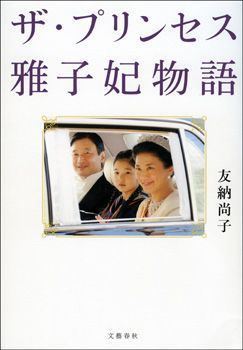
単行本刊行 2015年
皇太子徳仁親王と小和田雅子さんの結婚の儀。6月9日、皇居から東宮仮御所までオープンカーに乗ってパレードする二人を、沿道に集まった19万人が祝福した。次代の天皇と外交官出身の才女。誰もが皇室の輝かしい未来を確信した。
それから11年。2004年5月10日、欧州歴訪前の記者会見の場で、皇太子の口から衝撃的な言葉が発せられた。「雅子の人格を否定するような動きがあったことも事実です」──いわゆる人格否定発言。同年、雅子妃は適応障害により療養生活に入る。
以来、雅子妃の回復が思わしくないことに加え、愛子内親王の不登校問題など、皇太子一家は難しい問題に直面し続けている。
皇室は日本の縮図といわれるが、雅子妃の半生には、仕事と結婚の迷い、不妊や高齢出産、精神医療、子どもの不登校など、現代女性の主要なテーマが凝縮されているかのようだ。この20余年、雅子妃は幸せだったのだろうか。雅子妃病状の真相をスクープした友納氏が徹底取材で描く、プリンセスの素顔。
1994（平成6）年
巨人対中日、10.8決戦
10・8 巨人VS.中日 史上最高の決戦
鷲田康
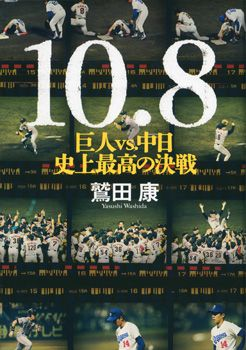
単行本刊行 2013年
10月8日、日本プロ野球58年の歴史で、初めての局面が訪れた。中日対巨人第26回戦、ナゴヤ球場。ともに69勝60敗の同率首位、残り試合1。すなわち「勝ったほうが優勝」。巨人監督・長嶋茂雄はこの一戦を「もはや国民的行事」と語った。
史上最高の舞台で、両チームは死力を尽くした。巨人先発・槙原寛己、中日先発・今中慎二。2回表の落合博満のソロ本塁打を皮切りに、両チームは細かく得点を積み重ねていく。
7回裏、巨人が3点リードした場面で、マウンドに3日前に先発したばかりの桑田真澄が上がった。桑田は3回を無失点で乗り切る。6対3。巨人、4年ぶりのリーグ優勝。
平均視聴率48.8%（プロ野球史上最高）、2010年にNPBが現役監督、コーチ、選手を対象に実施したアンケートで「最高の試合」部門1位。国民的行事の言葉に恥じない激闘だった。
伝説となったこの一戦を、今中、松井秀喜、立浪和義、桑田、大豊泰昭、斎藤雅樹......戦った男たちの証言で克明に綴る。10.8決戦には、野球の面白さのすべてが凝縮されている。
1995（平成7）年
地下鉄サリン事件
麻原彰晃の誕生
髙山文彦
文春新書刊行 2006年
新興宗教団体、オウム真理教が一躍世間の耳目を集めたのは、1990年の衆院選だった。「真理党」として教祖・麻原彰晃はじめ25人の候補者を擁立し、珍奇なパフォーマンスを展開。しかしこのとき、すでにオウムは信者を、またオウムをめぐるトラブルの解決にあたっていた坂本堤弁護士一家3人を殺害していた。
総選挙での惨敗を機に、オウムは反社会的傾向を強める。更なる信者の殺害。そして秘密裏に生成した猛毒サリンを長野県松本市で散布し、8人を殺害（松本サリン事件）。ついには3月20日、東京の営団地下鉄車内でサリンを撒き、13人を死に至らしめる。5月16日麻原逮捕。一連の事件により麻原ら13人に死刑判決が下っている。
「私は彼が異常だとは思わない。『異常』のふりをしているだけだろう。彼は『狂気』ではある。だが狂気とは、『正常』のひとつのあらわれ方である」（「後記」より）
麻原彰晃に宿った狂気の本質とは何か？ 熊本時代の言動、上京後の逮捕、宗教団体への執着......大宅賞作家・髙山氏が徹底取材で"さびしい怪物"の核心に迫る。
1996（平成8）年
アトランタ五輪サッカーで日本、ブラジルに勝利
28年目のハーフタイム
金子達仁
単行本刊行 1997年
「ブラジルではサッカーの下手な人のことを『日本人のようだ』という」
こんなフレーズが人口に膾炙していただけに、28年ぶりの五輪出場を果たした日本代表が、7月22日、グループリーグ初戦でブラジルを1対0で破ったのは驚天動地の出来事だった。人呼んで"マイアミの奇跡"。たしかにそれは奇跡に等しい快挙だったかもしれない。
しかし、この大金星の陰で、代表チーム内では日増しに不協和音が高まっていた。川口能活、松田直樹、前園真聖、中田英寿、城彰二......若い彼らの間に何があったのか。五輪直後、「Number」誌に「叫び」「断層」という二本の記事を発表し、ミズノ・スポーツライター賞を受賞した金子氏が、両記事を発展させ、渾身の力を傾注して書き上げたデビュー作。
「28年ぶりのオリンピック出場は、日本にとっては永遠に語り継がれる大事件でも、世界から見ればすぐに忘れ去られてしまうようなちっぽけな出来事かもしれないのです」（「あとがき」より）
日本サッカーの将来を語る上で、今こそ本書は欠かせない。
1997（平成9）年
香港、中国に返還
転がる香港に苔は生えない
星野博美
単行本刊行 2000年
1898年、英国が清朝から99年の期限で租借した香港。太平洋戦争中の日本占領を経て、戦後は、アジアの中継貿易基地として飛躍的な経済発展を遂げ、また香港映画など独自の文化を育んできた。
6月30日、99年のタイムリミットがやってきた。翌7月1日、香港は中国に主権委譲。第28代総督クリストファー・パッテンは香港を去った。
この歴史的な日を自分の目で、肌で感じるため、星野氏は香港に渡った。故郷に妻子を残した密航者、夢破れてカナダから戻ってきたエリート。それでも人びとは転がり続ける。街とともに変わり続け、運命に翻弄されつつも逞しく生きている。
「ここは最低だ。でも俺にはここが似合ってる」
揺るぎない視線で香港を見すえた2年間の記録。第32回大宅壮一ノンフィクション賞受賞作。
1998（平成10）年
日本長期信用銀行、経営破綻
元役員が見た長銀破綻
箭内昇

単行本刊行 1999年
バブル崩壊後の長引く景気低迷。巨額の不良債権を抱え、騙し騙し命脈を繋いでいた金融機関だったが、しわ寄せが一気に訪れた。1997年11月、三洋証券、北海道拓殖銀行、山一證券が相次いで倒れた。
戦後、企業に長期資金を融通し、高度経済成長を支えてきた日本長期信用銀行（長銀）もまた苦しんでいた。国内外のリゾート開発を大々的に展開していたイ・アイ・イ・インターナショナルに対する3,800億円をはじめ、多額の融資が回収不能に陥り、不良債権と化した。が、経営陣はそれを隠蔽し続けた。
しかし、ついに行き詰まった。10月、国は長銀の直接救済を決定。金融再生法が適用され、一時国有化。翌年、最後の頭取、大野木克信ら3名が商法違反容疑で逮捕された（のち無罪確定）。
破綻直前まで長銀の役員を務めていた箭内氏は、自問を繰り返した。我々はどこで間違ったのか？ どうすべきであったのか──？ 在職当時のメモなどから破綻までの軌跡をリアルに描いたこの苦渋に満ちた手記は、日本のあらゆる企業に通底する問題を指摘している。経営者・サラリーマン必読。
1999（平成11）年
江藤淳、死去
妻と私・幼年時代
江藤淳
単行本刊行 1999年
7月21日、激しい夕立の去った夜、「文藝春秋」編集部の電話が鳴り、信じられない事実が告げられた。江藤淳、死す。自らの手首を切っての自裁だった。享年66。
編集部は翌月号に江藤の追悼特集を組むべく、急遽動き出す。編集長が真っ先に電話をかけたのは、江藤の盟友、石原慎太郎氏だった。
「あの日の午後関東一円を襲った雷雨の激しさは並のものではなかった。（略）辛島昇が密葬の日、隣の席で、『あの雨さえなかったらなあ──』とつぶやくようにいっていたが、私もそんな気がしている」（文藝春秋1999年9月号「さらば、友よ、江藤よ！」石原慎太郎）
自裁の数時間前、江藤の最後の原稿を受け取ったのは「文學界」の編集長だった。彼は江藤のこんな言葉を聞いている。
「人とあまり会いたくないんですよ。形骸に会いにきても、しょうがないじゃないか」（文學界99年9月号「最後の原稿を受けとって」細井秀雄）
形骸──江藤は前年、最愛の妻・慶子さんを喪い、また自らも脳梗塞に倒れ、療養を続けていた。それらに疲弊し切ったおのれを、"ぬけがら"と自嘲したのか。
「生きることへの意志と、死への誘惑──言葉にしてしまうと違うような気もするが、この両極のあいだで揺れていることは確かだった」（同前）
だとしてもなぜ......と誰もが思った。石原氏はこう書く。
「彼を失った今になって思えば、彼の残した遺書が言葉少なにいかに毅然たるものであろうと、その自殺はトリスタンとイゾルデの順を違えた、典型的な妻恋いの末の後追い心中でしかない」（「さらば、友よ、江藤よ！」）
たしかに江藤と慶子さんは、二人を知る誰もが認める、精神的に深く結びついた夫婦だった。慶応大学在学中に知り合い、結婚した二人。年は一つ違いだが、年に一週間だけ同い歳になるときがあった。付ききりの看病を続けていたある日、江藤は編集者に「もう一度、同い歳になることができればなあ」とポツリと言い、涙を落とした。
「妻と私」は、最愛の人に先立たれた江藤が、苦悩と絶望の中で見据えた人間の生と死の深淵を描いた、文藝作品ともいえよう。絶筆「幼年時代」も収録。
2000（平成12）年
ルーシー・ブラックマン殺害事件
刑事たちの挽歌 警視庁捜査一課「ルーシー事件」
髙尾昌司
単行本刊行 2010年
7月1日、英国人女性、ルーシー・ブラックマンさんが都内で消息を絶った。麻布署に出された家出人捜索願。事件の匂いを嗅ぎとった所轄は警視庁に相談。捜査一課の特殊犯捜査係の精鋭が捜査に乗り出す。
10月、別件の準強制わいせつ容疑で一人の男が逮捕された。捜査官たちはこの男がブラックマン失踪のカギを握っていると睨んだ。しかし男は口を割らない。引き続き懸命にブラックマンさんの行方を追い、ついに翌年2月、神奈川県三浦市にある砂浜沿いの洞窟で、彼女の遺体を発見したのである。2010年、ブラックマン事件を含む9つの事件について、犯人に対する無期懲役刑が確定した。
本書は、オウム真理教事件、和歌山カレー事件などを追い続け、豊富な警察人脈を持つ髙尾氏が、ブラックマン事件の捜査の全貌を描いたドキュメントである。登場する捜査官たちは幹部に至るまですべて実名。本物のみが持つド迫力は数多の警察小説を凌駕する！
2001（平成13）年
「千と千尋の神隠し」公開
風の帰る場所 ナウシカから千尋までの軌跡
宮崎駿
文春文庫刊行 2013年
宮崎駿監督の長編アニメーション映画第8作「千と千尋の神隠し」。スタジオジブリ作品の恒例に則り、夏休み直前の7月20日に公開されるや、かつてない反響を巻き起こした。
興行収入304億円（歴代1位）、日本アカデミー賞最優秀作品賞受賞、ベルリン国際映画祭金熊賞受賞、そして米アカデミー賞アカデミー長編アニメ映画賞受賞。「風の谷のナウシカ」（1984年）、「天空の城ラピュタ」（86年）、「となりのトトロ」（88年）、「もののけ姫」（97年）などに続く、宮崎監督の新たなる代表作となった。
本書は、90年～2001年の間に、渋谷陽一氏が宮崎監督に対しておこなった5本のインタビューを収録したものである。「ナウシカ」から「千と千尋」まで、宮崎監督が自らの作品の背景や狙いはもちろん、文明論から歴史観に至るまで、徹底的に語り尽くしている。
「愛とか正義とか友情とか......本気で喋ってくれないかなあって、みんな待ってるんだと思いますね」（本書より）
2002（平成14）年
小泉首相訪朝
北朝鮮に消えた友と私の物語
萩原遼
単行本刊行 1998年
9月17日、小泉純一郎首相は電撃的に北朝鮮を訪問、金正日総書記と会談した。金総書記は過去の日本人拉致を認め、謝罪。それを受け1カ月後、地村保志・富貴恵夫妻、蓮池薫・祐木子夫妻、曽我ひとみさんの5人が帰国を果たした。彼らが新潟、福井から忽然と姿を消して、24年の歳月が流れていた。
しかし、問題の解決にはほど遠い。政府が拉致被害者と認定したのは17人。横田めぐみさんら残る12人は未だ帰国を果たしていない。また特定失踪者問題調査会は、北朝鮮による拉致が疑われる失踪者として約200人を認定している。
国家として拉致行為をおこなう国、北朝鮮。我々はこの隣人を、どう理解すればいいのか？ その最良のテキストが本書である。
1972年、「赤旗」平壌特派員となった著者は、大阪の定時制高校時代の親友を訪ねた。友は"地上の楽園"で幸せに暮らしているはずだった──。
北朝鮮はなぜ監獄国家となったのか。理想の王国建設を目指し帰国した在日朝鮮人を見舞った悲劇。日本はそれにどう関わったのか。日本と朝鮮、戦後の群像を描き「帰国運動」の真実を明らかにする。第30回大宅壮一ノンフィクション賞受賞作。
2003（平成15）年
松井秀喜、メジャーデビュー
エキストラ・イニングス 僕の野球論
松井秀喜
単行本刊行 2015年
90年代を代表する巨人の4番といえば、もちろんゴジラ松井。長嶋茂雄監督の1位指名を受け1993年デビュー。実働10年で332本塁打、1390安打を積み重ね、首位打者1度、本塁打王3度、打点王3度という成績を残した。
2002年シーズンでMVPの勲章を手にした松井はFA権を行使。12月、ニューヨーク・ヤンキースへの移籍が決定した。ゴジラ劇場第二章となったそれからの10年、エンゼルス、アスレチックス、レイズと渡り歩き、1253安打と175本塁打を上積み。堂々たるメジャーリーガーとして、米国にも"Godzilla"の咆哮を轟かせた。13年、長嶋氏とともに国民栄誉賞受賞。
本書は、松井氏の引退後初めての著書。日米にまたがる自身の経験を振り返り、監督論からイチロー、デレク・ジーターらについて、氏ならではの意見が展開される。目からウロコの野球論であり、学ぶことの多い人生論でもある。長嶋氏より「すべての野球選手、ファンに読んでほしい」と絶賛の言葉が寄せられた、これぞ野球ファン必読の書！
2004（平成16）年
室伏広治、アテネ五輪金メダル
超える力
室伏広治
単行本刊行 2012年
日本を代表するアスリート、室伏広治。40歳になった今も現役であり、2014年まで日本選手権ハンマー投を20連覇した。
世界の舞台でも12年ロンドン五輪で銅メダルを獲得し、健在ぶりを示したが、室伏の五輪といえば、やはりアテネ五輪の金。アドリアン・アヌシュのドーピング違反による繰り上がりという顛末はあったものの、アジア史上初の投擲種目金メダルという快挙だった。
本書は、ロンドン五輪直前の室伏選手が、ハンマー投人生を語り尽くしたもの。第1章、2章では、これまであまり深く語ってこなかった五輪や世界選手権での一投一投について。第3章では常につきまとうドーピング問題。現役アスリートがここまで詳細に語ったのは初めてだろう。第4章では、偉大なる父・重信氏とともに歩んできたアスリートとしての道。第5章はスポーツ科学者としてのハンマー投の研究についてと、後輩アスリートへの助言。
すべての言葉が、王者ならではの説得力をもって語られる。
2005（平成17）年
ハワード・ストリンガー、ソニー会長就任
さよなら！ 僕らのソニー
立石泰則
文春新書刊行 2011年
盛田昭夫、井深大という偉大な経営者と、トリニトロンテレビ、ウォークマン、CDプレイヤー、子会社SCEによるプレイステーションといった魅力的な製品群。Made In Japanの輝かしい象徴として「SONY」の響きに特別な思いを抱き続けてきたソニーファンは、同社が初めての外国人トップを頂いたというニュースを複雑な思いで受け止めたに違いない。
ソニーは、2003年1-3月期の大幅赤字発表を受けて株価が暴落した"ソニーショック"など、00年代に入って苦境に立たされた。が、ストリンガー、あるいはその後を継いだ現社長の平井一夫をもってしても、往時の輝きを取り戻すには至っていない。14年には史上初の無配に転じ、15年3月期決算は1,259億円の赤字を計上した。
ソニーはなぜ苦しんでいるのか。なぜ、アップルのように世間を騒がす新製品をつくれなくなったのか。経営者の誰が戦略を誤ったのか。懐かしの成功物語から一転して凋落してしまった「僕らのソニー」の軌跡を、歴代経営者の肉声を交えて辿る企業ルポルタージュの決定版。
2006（平成18）年
ライブドア事件
刑務所なう。 ホリエモンの獄中日記195日
堀江貴文
単行本刊行 2012年
東大在学中の1996年にウェブサイト制作会社オン・ザ・エッヂ（後のライブドア）を設立。急速に業績を伸ばしつつ、プロ野球球団設立への挑戦、ニッポン放送株買収、そして2005年総選挙への立候補など派手な言動を繰り広げ、IT時代の寵児となった堀江氏。
しかし、その陰で東京地検はライブドアに狙いを定めていた。
1月6日、同社本社に家宅捜索が入った。偽計取引・風説の流布の容疑を固めた東京地検は堀江氏らを逮捕。法廷闘争の末、11年には懲役2年6カ月の実刑判決が確定、収監された。
地に堕ちたホリエモン、しかし彼のバイタリティは些かも減じなかった。獄中でびっしり日記を書いてスタッフに送付。ほぼリアルタイムでのメルマガ発行という型破りのムショ生活。それをまとめた第一弾が本書である。
作業工としての担当は？ 獄中メシで何キロ痩せた？ 面会にきた茂木健一郎氏らと何を語ったのか？ 塀の中でもホリエモン節は健在だ。
13年、仮釈放された堀江氏は、関心を抱いていた宇宙開発事業に本腰を入れるとともに、新会社を設立するなど、相変わらず人生のOn The Edgeを楽しんでいる。
2007（平成19）年
iPS細胞発表
「大発見」の思考法 iPS細胞vs.素粒子
山中伸弥／益川敏英
文春新書刊行 2011年
iPS細胞（人工多能性幹細胞）とは何か。京都大学iPS細胞研究所ではこう説明している。
「人間の皮膚などの体細胞に、極少数の因子を導入し、培養することによって、様々な組織や臓器の細胞に分化する能力とほぼ無限に増殖する能力をもつ多能性幹細胞に変化します」（同研究所ウェブサイトより）
つまり、これをもとにさまざまな細胞をつくり出すことのできる、万能細胞。しかも本人の体細胞を用いるから拒絶反応がない。再生医療をはじめ、さまざまな応用が期待される、まさに夢の発明だ。
2007年、ヒトのiPS細胞生成成功を発表したのが、山中伸弥博士率いる京大のグループだった。世界に与えたインパクトは大きかった。早くも12年に山中氏はノーベル生理学・医学賞を受賞。現在も引き続き、iPS細胞応用の研究に注力している。
その氏が、08年にノーベル物理学賞を受賞した益川敏英博士と対論を繰り広げているのが本書である。まさに夢の顔合わせ。世紀の発見、そのとき頭脳では何が起きているのか。生命論、脳の神秘から発想法、日常の勉強法まで、知的刺激の詰まった一冊。
2008（平成20）年
赤塚不二夫、死去
赤塚不二夫のことを書いたのだ!!
武居俊樹
単行本刊行 2005年
「私も、あなたの数多くの作品のひとつです」
8月7日午前、宝仙寺（東京都）でおこなわれた赤塚不二夫の葬儀で、タモリは弔辞をこう結んだ。炎天下に駆けつけた多くのファンたちは、「天才バカボン」の主題歌がかかる中、出棺を見送った。
「おそ松くん」「ひみつのアッコちゃん」「もーれつア太郎」──数多くの傑作を遺した希代のギャグ漫画家の人生は、多様なエピソードに彩られている。旧満州に生まれ、敗戦後、引き揚げの過程で二人の妹を喪う。父親はシベリア抑留から生還したが一家は貧困に苦しんだ。漫画との出会い。石森章太郎とトキワ荘に同居し、藤子不二雄らと腕を磨き合い、超人気作家となる。タモリ、山下洋輔、美空ひばりらとの華やかな交友。二度の結婚。そして2002年、脳内出血で倒れ植物状態となる......。
赤塚の傍らには、常に編集者がいた。その代表格こそ"武居記者"である。1966年小学館に入社し、「少年サンデー」に配属されるや赤塚番に。以降、編集者人生を赤塚に捧げ尽くした。そんな男の書いた本が面白くないはずがニャイ。ハチャメチャ交流36年、武居記者なら全部書いてもいいのだ！
2009（平成21）年
バラク・オバマ、米大統領に就任
教科書に載ってないUSA語録
町山智浩
単行本刊行 2012年
「Yes, we can」「Change」といったキャッチーな言葉を掲げ、大統領選を勝ち抜いたバラク・オバマ。1月20日、アフリカ系として史上初となる米国大統領就任を果たした。47歳、長身痩躯、浅黒い肌。世界が新しいアメリカの誕生を予感した。
6月、映画評論家、町山智浩氏が「週刊文春」にて「言霊USA」の連載を始める。米国在住の氏が、日常生活やテレビなどで耳にした米国の新しい言葉、流行り言葉、バカげた言葉などを紹介していくコラムだ。
Birthers（オバマがケニア生まれだと信じる人々）、Frenemy（友達ぶった敵）、Greater Fool Theory（もっとバカがいる理論）、Chinamerica（中国とアメリカの運命共同体）......大統領が替わったくらいで国が変わるはずもない。氏が毎週ヘンテコな言葉で切り取っていくアメリカは、やっぱりヘンテコな国だった。
連載をまとめた本書から、新聞、テレビ、ウェブでは分からない"オバマの時代"のアメリカが、名言、失言、流行語を通して見えてくる。町山ワールド全開、一級のアメリカ批評本だ。
2010（平成22）年
尖閣沖中国漁船衝突事件
平成海防論 膨張する中国に直面する日本
富坂聰
単行本刊行 2009年
日本固有の領土である尖閣諸島。かねてよりここに野心を示していた中国だったが、9月7日、日本領海を侵犯して操業していた中国漁船が、海上保安庁の巡視船に体当たりするという事件が起きた。海上保安庁は船長を逮捕したが、24日、突如釈放。政治的判断による決着が囁かれた。
日本が世界有数の海洋国家であることは、普段あまり意識されない。しかし海上では日々パワーゲームが行われている──この事件は、我々に改めて冷厳な現実を突きつけた。
事件以降、海への膨張の欲望をますます高める中国に、日本はいかに対処すべきか。また、調査捕鯨船団と環境テロリストが激突する南氷洋、ソマリア沖の海賊、北朝鮮不審船......海をめぐる問題から、我々は何を学び取ればいいのか。いまもっとも信頼される中国ウォッチャーのひとりである富坂氏が深層を取材。
2014年、文庫化された際、新たに「中国海警局 その戦略的意味」を付した増補版。今日本人に求められているのは、「冷静さ」だ。
2011（平成23）年
東日本大震災、福島原発事故
カウントダウン・メルトダウン（上下）
船橋洋一
単行本刊行 2013年
政府や官庁から独立した科学者、弁護士、ジャーナリストらにより、福島第一原発事故の原因と被害の拡大について調査すべく設立された福島原発事故独立検証委員会＝民間事故調。2012年3月、民間事故調が発表した調査・検証報告書は大きな話題を呼んだ。報告書は書籍化され10万部を超えるベストセラーとなり、また、その内容を内外のメディアが繰り返し報道した。
民間事故調を指揮したのが、元朝日新聞主筆の船橋氏。氏はそれ以降も独自に閣僚、浪江町、飯舘村、米国などに取材。福島第一原発事故の"世界を震撼させた20日間"を、ノンフィクションとして本書に結実させた。
極限状況下、日本政府、アメリカ政府、軍、東電はどう動いたのか。神は細部に宿るというが、数々のエピソードが叙事詩のように積みあがっていくさまは圧巻。特に米国務省要人、米NRC要人らへのインタビューにより、米国があのときどのように動いたかが本書で初めて明らかになった。第44回大宅壮一ノンフィクション賞受賞作。
2012（平成24）年
羽生善治、史上最多のタイトル81期獲得
羽生善治 闘う頭脳
文藝春秋編
ムック刊行 2015年
戦後昭和の将棋界に君臨した大名人、大山康晴。彼のタイトル累計80期獲得という偉業は、誰も超えられないと思われていた。
しかし7月5日、羽生善治が挑戦者の中村太地六段に3連勝し棋聖位の防衛に成功。単なる通過点であるかのように、あっさりと81期目のタイトルを獲得した。
2015年6月現在、44歳の羽生は7タイトル中4冠を保持しており、累計獲得数を91に伸ばしている。数年後、あっさり100の大台に乗せることを疑う者は、まずいまい。
1985年、15歳でプロデビュー。91年以来24年間、少なくとも1冠以上を保持。96年2月、史上初の7冠独占を達成。通算対局数500超、通算勝率7割超の双方を満たす唯一の棋士──。羽生善治は、あまりにも強い。
闘いへのモチベーションを失わず、最強であり続けている彼の発する言葉は、将棋の枠には収まらない含蓄に満ちている。本書は氏の全面協力のもと、新規ロングインタビュー、作家・沢木耕太郎氏との対談を中心に、各誌が掲載してきた記事を5つのキーワードで分類し構成。ここには、羽生流の発想のヒントが詰まっている。
2013（平成25）年
習近平、中国国家主席就任
習近平 なぜ暴走するのか
矢板明夫
単行本刊行 2012年
2012年秋、中国共産党総書記の座に習近平が就いた。翌13年3月には国家主席にも就任。名実ともに、中国は胡錦濤時代から習近平時代に移行した。
世界最大の13億人を擁する、世界第2位の経済大国。そのトップに立つ人物にしては、習近平の人となりは知られていない。毛沢東、鄧小平のような強烈なカリスマは、習からは漂ってこない。産経新聞中国総局の矢板氏は指摘する。
「習近平は、共産党歴代最高指導者の中で実力は最も弱いといわざるをえない。（略）外交では強硬的である一方、国内では『反腐敗キャンペーン』を掲げ、次々と汚職高官を摘発している習近平政権は、一見すると強力であり、ともすれば『暴走』気味にすら映る。だがそれは、政権運営の脆弱さの裏返しでもあるのだ」（「まえがき」より）
軍の台頭、少数民族との対立、汚職問題、民主化への対応。共産党独裁の矛盾が噴出するこの国を、習近平は御してゆくことができるのか。それとも覇権国家"最後の皇帝"となるのか。
14年の文庫化にあたりアップデートされたこの最新版に、すべての答えはある。
2014（平成26）年
STAP細胞事件
捏造の科学者 STAP細胞事件
須田桃子
単行本刊行 2015年
「須田さんの場合は絶対に来るべきです」
始まりは、理化学研究所・笹井芳樹博士から届いた1通のメールだった。1月28日、「iPS細胞を超える発見」と喧伝する理研の記者会見に登壇したのは、若き女性科学者、小保方晴子氏。氏は高らかに刺激惹起性多能性獲得細胞（STAP細胞）の発見を宣言した。
これはまさにノーベル賞級。興奮とフィーバーに酔っていた毎日新聞科学環境部の取材班。しかし、取材を進めていくと、疑問がひとつ、またひとつ増えていく。これは歴史的発見どころか、科学史に残るスキャンダルになる......！
7月、論文撤回。そして8月、笹井博士の自死という最悪の展開に至る。
STAP細胞報道をリードし続けた毎日新聞。その取材の中心となった女性科学記者が書き下ろした「深層」。誰が、何を、いつ、なぜ、どのように捏造したのか──？ 第46回大宅壮一ノンフィクション賞受賞作。
【あ行】
武居俊樹
辻井喬
『麻原彰晃の誕生 』
髙山文彦
坪内祐三
松井秀喜
『F1 走る魂 』
海老沢泰久
『狼がやってきた日 』
柳田邦男
『女たちのサバイバル作戦 』
上野千鶴子
【か行】
船橋洋一
宮崎駿
『危機の宰相 』
沢木耕太郎
萩原遼
町山智浩
『恐怖の2時間18分 』
柳田邦男
髙尾昌司
堀江貴文
『血脈（上中下） 』
佐藤愛子
フィリップ・シノン
『完本 皇居前広場 』
原武史
『超える力 』
室伏広治
『五衰の人 三島由紀夫私記 』
徳岡孝夫
石原慎太郎
『この日本で生きる君が知っておくべき「戦後史の学び方」 池上彰教授の東工大講義 日本篇 』
池上彰
『転がる香港に苔は生えない 』
星野博美
【さ行】
『サイゴンのいちばん長い日 』
近藤紘一
友納尚子
『さよなら！ 僕らのソニー 』
立石泰則
『指揮官 』
児島襄
『習近平 なぜ暴走するのか 』
矢板明夫
鷲田康
『昭和が明るかった頃 』
関川夏央
『昭和天皇伝 』
伊藤之雄
『青春を山に賭けて 』
植村直己
柳澤健
【た行】
『合本 大地の子 』
山崎豊子
山中伸弥／益川敏英
『田中角栄 その巨善と巨悪 』
水木楊
鴨下信一
『チェ・ゲバラ伝 増補版 』
三好徹
城山英巳
『千代の富士一代 』
石井代蔵
『妻と私・幼年時代 』
江藤淳
『テロルの決算 』
沢木耕太郎
『点と線 』
松本清張
『東京五輪1964 』
佐藤次郎
保阪正康
『鄧小平秘録（上下） 』
伊藤正
佐々淳行
『洞爺丸はなぜ沈んだか 』
上前淳一郎
佐藤正明
【な行】
『28年目のハーフタイム 』
金子達仁
『日本国憲法の二〇〇日 』
半藤一利
半藤一利
『日本の黒い霧（上下） 』
松本清張
須田桃子
【は行】
『羽生善治 闘う頭脳 』
文藝春秋編
森田 彦
『複眼の映像──私と黒澤明 』
橋本忍
浅見雅男
武田賴政
『プロ野球「衝撃の昭和史」 』
二宮清純
富坂聰
『平成経済事件の怪物たち 』
森功
杉原美津子
【ま行】
『ミッチー・ブーム 』
石田あゆう
城山三郎
『元役員が見た長銀破綻 』
箭内昇
【や行】
『夢を食った男たち 「スター誕生」と歌謡曲黄金の70年代 』
阿久悠
【ら行】
『リクルートという奇跡 』
藤原和博
【わ行】
青島幸男
本書は、電子書籍オリジナル編集です。

電子書籍で「戦後」を読む
70年の70冊
２０１５年７月２０日 発行
編 者 文藝春秋
発行人 村上和宏
発行所 株式会社 文藝春秋
東京都千代田区紀尾井町３─２３
郵便番号 １０２─８００８
電話 ０３─３２６５─１２１１
〈ご注意〉
本作品の全部または一部を、著作権者ならびに株式会社文藝春秋に無断で、複製（コピー）、転載、改ざん、公衆送信（ホームページなどに掲載することを含む）することを禁じます。万一このような行為をすると、著作権法違反で処罰されます。
〈お断り〉
一部の漢字が簡略体で表示される場合があります。また、ご覧になる機種により、表示の差が認められる場合があります。